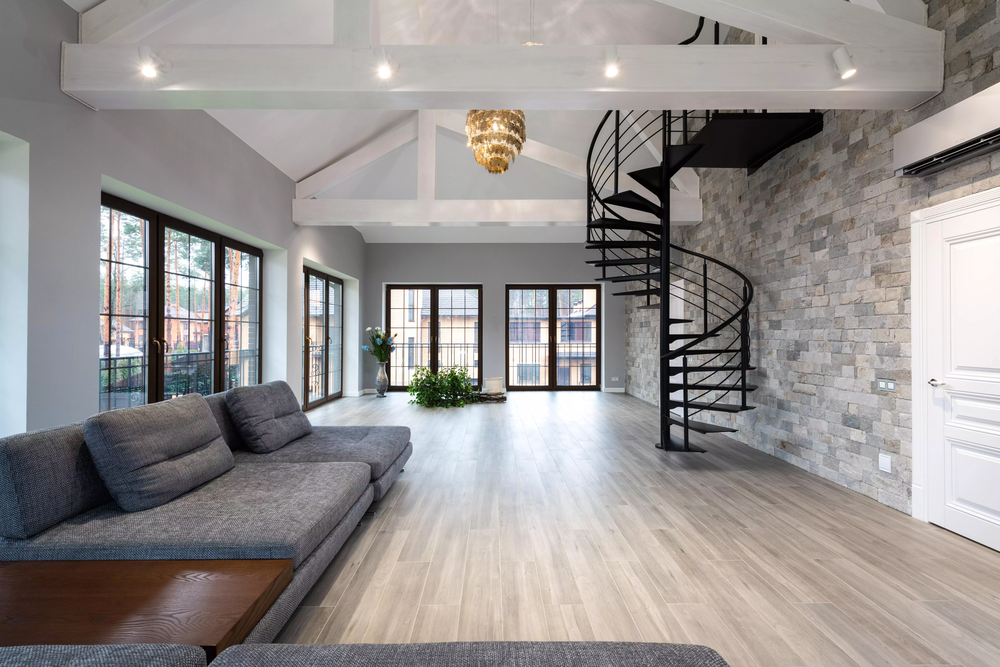

D.W Construction

Services!

We help you with various carpentry work. If you have a project that involves electricity and bathroom renovation, we arrange it!
We take on all demolition work and removal of material. Forming of concrete, Ground work, Insulation.

We have various collaborations, and offer a number of different newly built apartments, houses and cottages that suit your wishes.